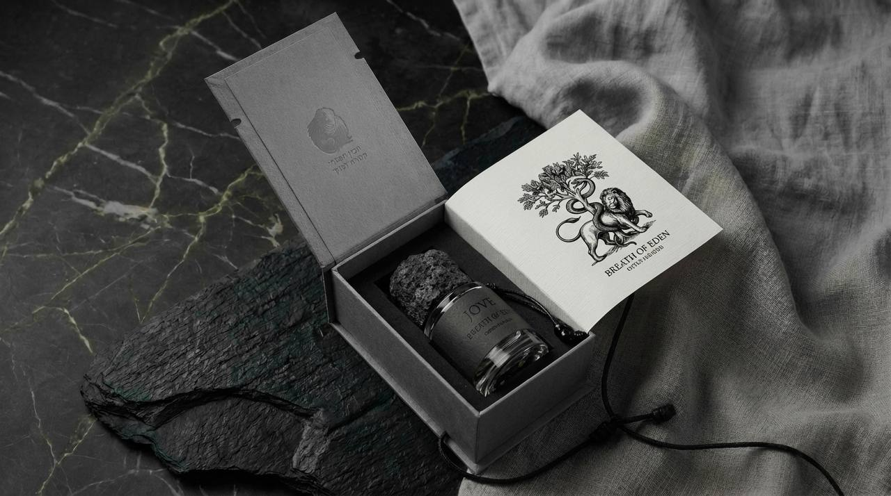

About JOVE
브랜드 소개
JOVE는 서울에서 시작된 니치 퍼퓨머리 브랜드입니다. 우리는 향이 단순한 제품이 아닌, 기억과 이야기를 담는 매체라고 믿습니다.
모든 향수는 '창조'라는 하나의 서사에서 출발합니다. 빛과 어둠, 신성과 유혹, 순수와 타락 — 이 양극 사이에서 가장 아름다운 이야기가 탄생합니다.
"기억이 보이지 않는 곳에서,
기억되기를 선택한 자들을 위한 향."
기억되기를 선택한 자들을 위한 향."
Creation Series
JOVE의 첫 번째 컬렉션인 Creation Series는 두 개의 세계로 구성됩니다.
Lion's World — 신성한 세계. 빛, 순수, 경외의 향. Genesis I, Breath of Eden, Hawa 등 창조의 신성한 면을 담은 향수들.
Serpent's World — 유혹의 세계. 그림자, 깊이, 중독의 향. 곧 공개될 컬렉션으로, 타락과 아름다움의 경계를 탐구합니다.

철학
우리는 향을 통해 이야기를 담아, 영원히 기억될 감각을 창조합니다. 각 보틀은 화산석 캡과 가죽 래핑으로 마감되며, 자연의 원초적 아름다움을 담고 있습니다.
JOVE라는 이름은 고대 로마의 최고신 Jupiter(Jove)에서 유래했습니다. 하늘과 빛의 신 — 가장 높은 곳에서 모든 것을 내려다보는 존재. 우리의 향수도 그런 시선으로, 인간 존재의 가장 깊은 이야기를 바라봅니다.
연락처
이메일: hello@jove.kr
인스타그램: @jove